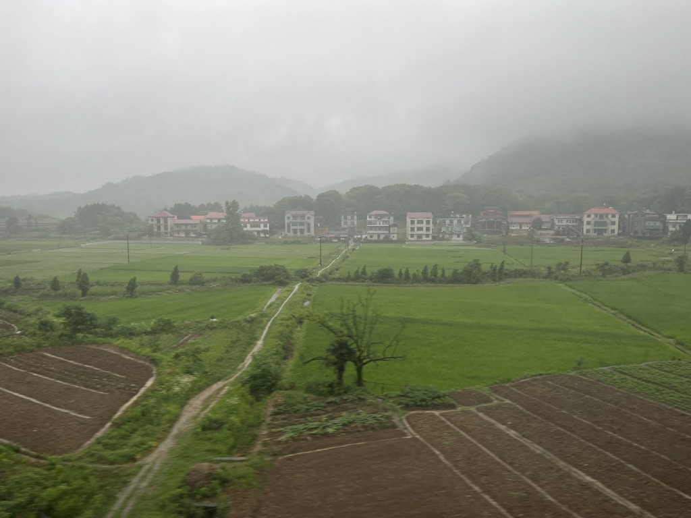
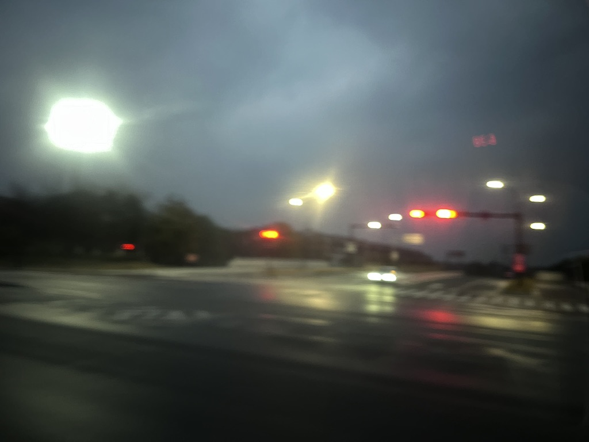

About Me

Hello Internet! I am Steve (Haoxiang) Lin, an undergraduate at Zhejiang University-University of
Illinois Urbana-Champaign joint institute (that's a mouthful). I am an enthusiastic software
developer, a novice researcher, a diehard classical music fan, an average runner, and a
literature and linguistic nerd.
Contact Me
Email: haoxiang.23@intl.zju.edu.cn
Development
I do programming with a vast number of lanuages. I did projects in VB, HTML/JS/CSS, Python, C+/Qt,
Swift and counting. I have also touched Objective-C and C#. (No, Java is not on here. I had enough
of downloading JVM everywhere and ditched it long ago. It only lives in my name now).
Check out my GitHub repos:
https://www.github.com/thejavanoob
Explore my recent projects here.
A VSCode debugger for the educational computer system LC-3.
Source Code
VSCode Marketplace
A web app to visualize the footsteps of historic figures. Powered by AI.
Try it out.
Reading & Writing
I like reading Classical Chinese literature and Contemporary Western literature, and I have written
some poems and texts from time to time.
Classical Music Portraits
Some Classical Music tell stories. Some stories were told in the title, but most are inferred by the listener.
Here, I aim to capture the essence of the stories in the form of short novels.
Debussy's La Mer: A Portrait
The grasp of darkness has reached its demise, the ever mighty, ever mysterious, ever nourishing being
known as the sea has begun the daily endeavor of embracing enlightenment from the big fireball itself...
Read More
随笔

南乡子·归途即景
岭表至江南，幕雨烟云人未还。滴水惜窗风拂去，微寒。平亩数丈小禾潭。
田家少人闲，翠岭清溪无暇观。锄罢归来路何处。青山。无奈细雨湿笠衫。
Read More

黎明偶记
因为赶四级考试又一次在六点早起，拉开窗帘时天尚未泛白。想起学期初也常常六点起床，漫步校园，不禁喟然感慨...
Read More
Research
I am still barging my way getting into the AcADemIc CoMmuNItY, with currently no publications
(or even ongoing projects
training). In the near term, I plan to research music generation. Long term (postgrad), I might do
Embodied AI.
Music
I am a diehard (exclusive) classical music fan, having listened to 500+ pieces from the Baroque period
to the 21st century (Yes, this is still Classical music). My favorite composer is Beethoven, followed
by Franz Liszt and Johannes Brahms.
I also play the piano and I spend more time on it than I would like. Rachmaninov's second piano sonata
has taken 1.5 years of my time, and I am only 2/3 of the way through it.
I have tried to do composing, but only made one composition. You can listen to them on Bilibili.
A Midsummer Night's Dream
Trio for Violin, Flute, and Clarinet in F major
This piece was inspired by a walk to the convenience store in Summer 2019, and it took 4 years to
complete. The paintings in the video are photos taken by me that are modified by AI.
Listen Here
Running & Sports
I am an average runner that covers all distances (versatile? maybe. fast? no.) My main event seems to
be the 400m with a PB of 56.91s. But I also enjoy a good long run for it represents the lonely
and self-transcending nature of running.
I am also barging my way getting into swimming and cycling. My goal is to run a
marathon and complete a triathlon during college.
Language Learning & Linguistics
I am currently learning German and Japanese, which means at some point I could be considered
quadro-lingo. It's impossible to not be interested in linguistics after learning so many
languages, especially phonetics (aka I LiKe MakInG wiREd SoUnDs).

Ich learne Deutsch für fast eins Jahre, denn Ich liebe klassiche Musik, und viele stüke und
lieder sind im Deutsch, und die Deutsche Leute sind sehr effizient, ich mag sehr viel
ihren Kultur.